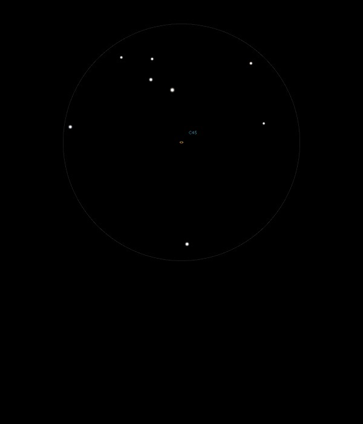

NGC 5248
Spiral Galaxy in Bootes
NGC 5248
Mag 10.2
Caldwell 45
12/05/15
Just a smudge in 25mm but with inverted vision in 12mm
quite a bright core and a hint of shape became visible
A Mag 9.66 and 10.55 set of stars point nicely to it in both
25mm and 12mm